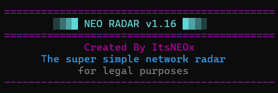

Cybersecurity
NEO-RADAR
A gateway program for learning Nmap, built to make network scanning approachable for beginners. NEO-RADAR performs basic nmap scans and provide the equivilent commands for nmap .
View on GitHub